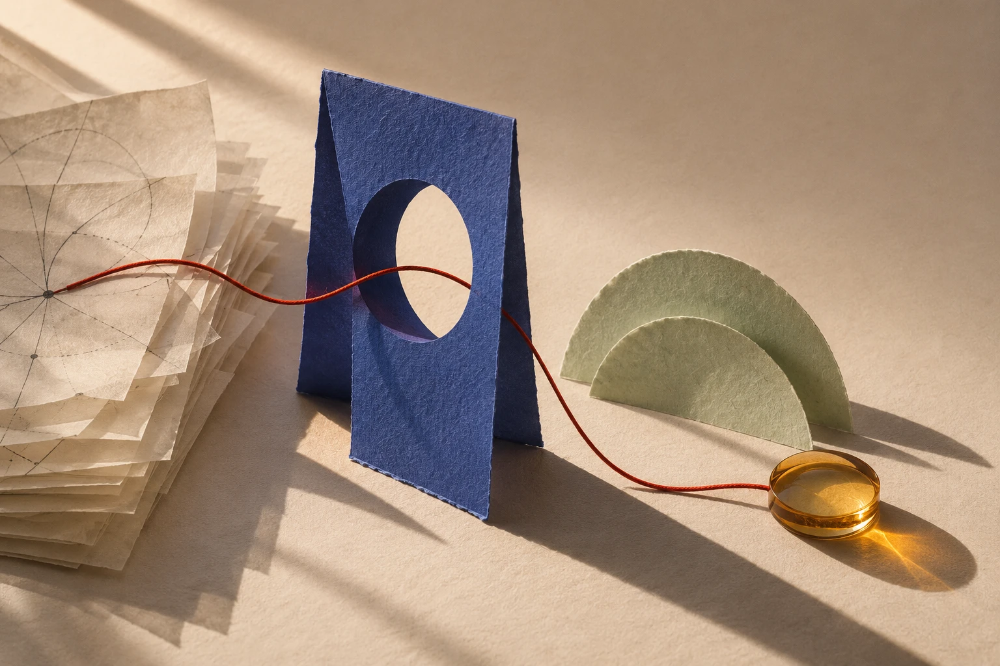

STRATEGIC COMMUNICATIONS / CREATIVE DEVELOPMENT
I make important
ideas impossible
to ignore.
I work where strategy, communication, creativity, and technology meet. Turning complex challenges into clear ideas and meaningful experiences.

EDITORIAL STUDY / CONNECTIONSThe same elements. A clearer direction.
A few ways I turn
direction into work.
The idea is only
the beginning.
Different challenges. Different audiences. One constant: making the work meaningful.
Before the answer,
a better question.
A short look at how I move from a communication problem to an actionable idea.
An important initiative has a compelling mission, but its message isn’t connecting with the audience.
Curious at the start.
Committed to the detail.
I like the point where a good question turns into something we can actually make.
The value is in
the connections.
Different contexts.
A wider perspective.
BA in Communication and Media Studies
King Saud University · 2024
Corporate Communication · Second Class Honors
Good work starts
with a conversation.
I’m interested in meaningful challenges, ambitious teams, and opportunities to build communication that makes a difference.